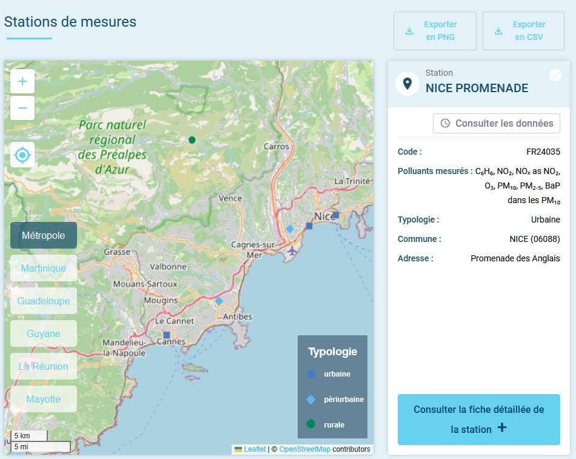
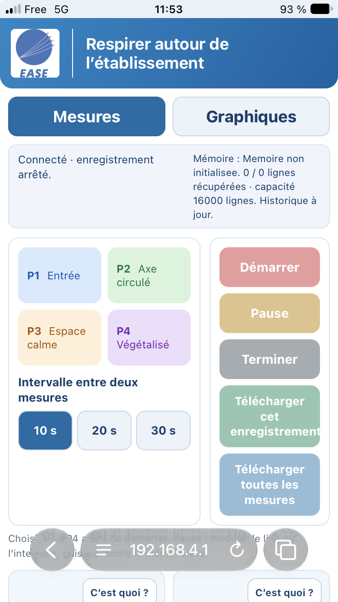
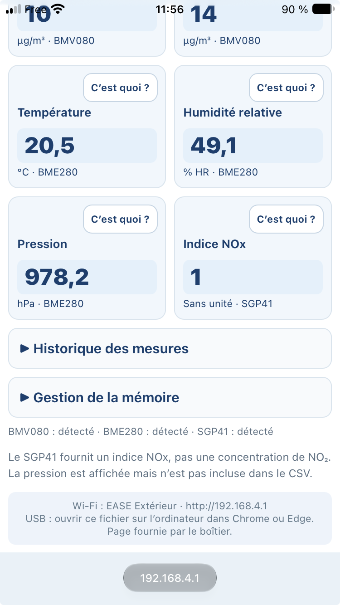
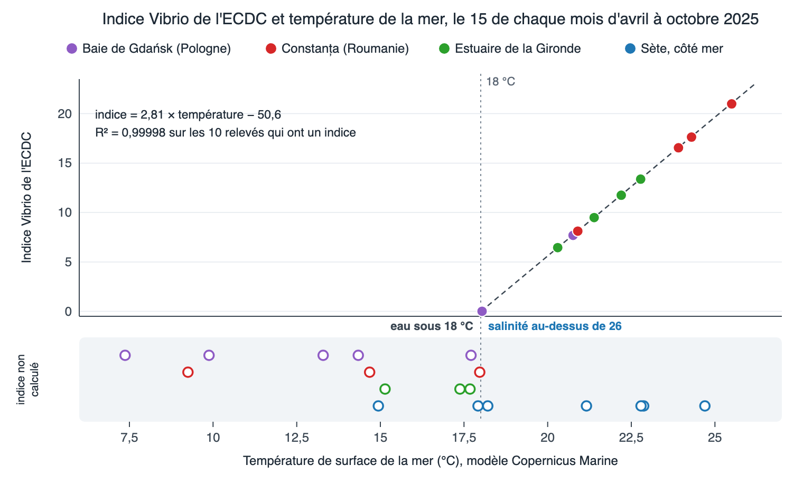
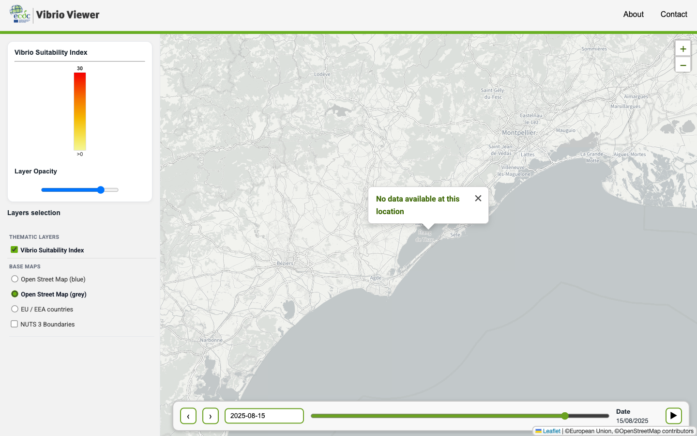

Projet Erasmus+ porté par l'académie de Nice et l'INSPÉ de Nice, la Richard-Hallmann-Schule (Allemagne) et l'Institut national de physique de la Terre (Roumanie), avec l'appui de Météo-France, du CNES (Calisph'Air) et de Thales Alenia Space.
EN DIRECT
Capture de secours à déposer avant chaque rotation : images/secours-appli.jpg Elle s'affiche ici si la recopie de l'écran du téléphone échoue.
Même cadre : 10 m par pixel, puis 20 cm par pixel
Santé environnementale : deux familles de risques
Polluants de l'air
Les particules fines
Agents infectieux
Le virus du chikungunya, transmis par le moustique tigre, et les bactéries Vibrio
Comment les étudier, avec quelles données et à quelle échelle ?
Icônes : Font Awesome Free, CC BY 4.0.
La rue
Respirer autour de l'établissement
L'air et les capteurs
La région
Chikungunya, le climat change la donne
Le moustique tigre
La mer
Le risque Vibrio
Les bactéries des eaux côtières
La rue
Respirer autour de l'établissement
Capteurs sur le terrainCollège, prolongements lycée4 à 5 h
La région
Chikungunya, le climat change la donne
Données en ligneLycée3 à 4 h
La mer
Le risque Vibrio
Données en ligneLycée3 à 4 h
Comprendre ce que mesure la source
Comparer des situations
Discuter la fiabilité
Mettre en regard les échelles
Formuler une recommandation
La rue · Pourquoi sortir mesurer ?
CAMS, Copernicus : une estimation des PM2,5 calculée par un modèle, pour des mailles de plusieurs kilomètres

Geod'air : les stations réglementaires des Alpes-Maritimes, chacune en un point fixe
Les concentrations de particules fines sont-elles différentes entre les lieux autour de notre établissement ?
La rue · Le boîtier
BMV080
Particules fines
PM2,5 et PM10, en µg/m³
BME280
Température, humidité, pression
°C, % d'humidité relative, hPa
SGP41
Indice NOx
sans unité
Le boîtier crée son propre Wi-Fi ou se branche en USB : sa page s'ouvre dans un navigateur.
La rue · Quatre lieux, deux passages
P1Entrée
P2Axe circulé
P3Espace calme
P4Végétalisé
P1→P2→P3→P4→P4→P3→P2→P1
3 minutes d'arrêt à chaque lieu, capteur immobile à hauteur de respiration
Une mesure toutes les 10 secondes, le lieu choisi sur la page avant chaque arrêt
Les véhicules comptés pendant l'arrêt, l'heure de début et de fin notée

La rue · Une boucle mesurée avec ce boîtier
Graphique à insérer moyenne des PM2,5 de chaque arrêt, aller et retour côte à côte, de P1 à P4
Oùà compléter
Quandà compléter
Comment8 arrêts de 3 minutes, une mesure toutes les 10 secondes
La rue · Un écart est-il réel ?
Un écart entre deux lieux n'est retenu que s'il dépasse la variation entre les deux passages de chacun de ces lieux.
D(i,j) > max( d(i), d(j) )
d(i) : différence entre l'aller et le retour au lieu i D(i,j) : différence entre les moyennes des lieux i et j Critère appliqué séparément à chaque grandeur mesurée
Tableau à insérer écarts entre lieux et variations aller-retour de la boucle mesurée
Le mot juste : « écart spatial discernable dans les conditions de cette campagne ».
La rue · Ce que mesure chaque capteur
PM2,5 et PM10µg/m³
Une concentration. Précision annoncée pour le BMV080 : ±10 µg/m³ entre 0 et 100 µg/m³. Le capteur n'a pas été comparé à une station sur place.
Indice NOxsans unité
Un indicateur relatif, sensible à certains gaz oxydants, calculé à partir de l'historique récent du capteur (référence sur 24 h). Il ne mesure pas la concentration de NO₂ et ne se compare pas directement à une station réglementaire.
« Le SGP41 fournit un indice NOx, pas une concentration de NO₂. »La page du boîtier, sous les valeurs

La rue · Trois sources, trois échelles
Mesure portée
Un arrêt de 3 minutes, en un point
Le boîtier, pendant la boucle
Mesure fixe réglementaire
La station la plus proche qui mesure les PM2,5
Nom, distance, typologie et influence : à compléter
Estimation par un modèle
Une maille du produit CAMS
Taille de la maille et pas de temps : à compléter
À insérer : les PM2,5 pendant la boucle, selon le boîtier, la station et CAMS
Maille du modèle régional → périmètre représenté par la station → arrêt de trois minutes en un point du trajetLes échelles de la ressource, bloc Analyser
La rue · Le jeu de la source adaptée
Chaque groupe lève une carte, puis justifie
L'entrée est-elle plus chargée en PM2,5 que l'espace calme ?
Les élèves respirent-ils un air dangereux pour leur santé ?
Capteur porté
Station
Modèle régional
Aucune source ne permet de répondre
« Respirer autour de l'établissement », bloc Agir, gamification
La rue · Trier avant d'écrire
Établi
Un écart discernable selon le critère aller-retour, dans les conditions de cette campagne
Exemple de la boucle à compléter
Suggéré
Une tendance non discernable, observée une fois, ou à plusieurs explications
Exemple de la boucle à compléter
Hors de portée
Valeur guide sur 24 heures, exposition réelle, risque sanitaire, polluants non mesurés
Exemple de la boucle à compléter
EASE Air : note de situation et recommandation pour l'établissementUne page, adressée à un responsable nommé de l'établissement. Recommander une nouvelle campagne est une issue complète.
La région · Chikungunya, le climat change la donne
Antibes, été 2025
144
cas autochtones de chikungunya
« Un épisode hors norme »Santé publique France, bilan 2025, édition Paca, p. 11
La question de la ressourceDans quelle mesure l'évolution des conditions climatiques peut-elle favoriser l'expansion d'Aedes albopictus et contribuer à l'émergence du chikungunya en Europe ?
La région · Ce que font les élèves
Le climat
ERA5-Land, Copernicus
température et pluie, jour par jour, depuis 1951
Le moustique
Cartes de l'ECDC
où Aedes albopictus est établi, en Europe
Les cas
Santé publique France
cas importés et cas autochtones
Sans capteur : un ordinateur, un tableur et trois sources de données en ligne.
La région · Trois villes en 2025
Jours favorablesmai à octobre 2025, sur 184
Aedes albopictuscarte ECDC, juin 2025
Cas importés2025
Cas autochtones2025
AntibesFrance
174
case ERA5-Land d'Antibes
établi
Alpes-Maritimes
102
cas importés en Paca
144
épisode d'Antibes
BarceloneEspagne
175
case ERA5-Land de Barcelone
établi
Catalogne
84
cas importés en Catalogne
0
Espagne entière
LondresRoyaume-Uni
99
case ERA5-Land de Londres
non établi
Angleterre
160
cas importés, Angleterre, pays de Galles, Irlande du Nord
0
Angleterre, pays de Galles, Irlande du Nord
À votre avis, pourquoi aucun cas autochtone n'a été détecté en Espagne ?
Jour favorable : température moyenne entre 16,2 et 31,6 °C (Mordecai et al., 2017). Sources : Copernicus ERA5-Land (via Open-Meteo), ECDC et EFSA, Santé publique France, RENAVE (Espagne), UKHSA. Données consultées le 13/11/2026. Icônes : Font Awesome Free, CC BY 4.0.
jours favorables par an, moyennes 1951-1980 puis 2016-2025
Londres
50 → 88,3
mêmes périodes
Données ERA5-Land (Copernicus, via Open-Meteo). Jour favorable : température moyenne journalière entre 16,2 et 31,6 °C. Graphique retracé à partir des données utilisées dans l'activité.
La région · Fiabilité et échelles
Le même article donne deux modélisations différentes, et Londres passe de 99 à 166 jours favorables.
Antibes
174
171
Barcelone
175
174
Londres
99
166
16,2 à 31,6 °C, température constante11,9 à 28,3 °C, avec 8 °C d'écart dans la journée
Une case de données climatiques
8 km × 11 km
Le capteur posé dans une cour
un point
Jours favorables de mai à octobre 2025, sur 184. Plages : Mordecai et al., 2017, PLoS Neglected Tropical Diseases 11(4): e0005568. Case ERA5-Land à la latitude d'Antibes.
La région · Agir
Extraits du bulletin de veille écrit en faisant l'activité comme un élève (Barcelone)
Niveau de vigilance proposé pour la saison 2026
ÉLEVÉ de juin à octobre
MODÉRÉ en mai et en novembre. En 2025, le climat et la présence avérée du moustique étaient favorables de juin à octobre et des cas importés sont arrivés, sans transmission locale détectée.
Recommandations
Signaler sans délai, de mai à novembre, tout cas importé et traiter contre les moustiques autour de chaque malade encore virémique.
Vider chaque semaine les récipients d'eau stagnante (soucoupes, seaux, gouttières) chez soi et dans les lieux publics.
Rappeler aux voyageurs de retour de zones touchées (Cuba, océan Indien) de se protéger des piqûres et de consulter en cas de fièvre avec douleurs articulaires.
ALERTEPlusieurs cas importés de chikungunya viennent d'être signalés dans votre territoire. Les conditions climatiques actuelles permettent-elles une transmission locale ?« Chikungunya, le climat change la donne », p. 15
Les groupes deviennent des cellules de veille sanitaire : climatologue, entomologiste, épidémiologiste, spécialiste des données, professionnel de santé, chargé de prévention.
La mer · Le risque Vibrio
La question de la ressource
« Et si quelques degrés supplémentaires dans l'eau de mer suffisaient à faire apparaître de nouveaux risques sanitaires ? »« Le risque Vibrio », p. 1
Une hypothèse que les élèves examinent avec des données réelles.
La problématique de la ressourceComment les modifications des écosystèmes marins liées au changement climatique influencent-elles la répartition des agents pathogènes émergents ?
EOxCloudless by EOX IT Services GmbH (Contains modified Copernicus Sentinel data 2024)
La mer · Ce que font les élèves
Les Vibrio : certains sont des agents infectieux, qui contaminent par les plaies ou par ingestion d'aliments crus.
Baignadeplaie en contact avec l'eau de mer
Produits de la merconsommés crus
L'indice
Vibrio Viewer, ECDC
favorabilité aux Vibrio, jour par jour, mers d'Europe
La mer
Copernicus Marine
données de surface, modèles de 2 à 4 km
Les coquillages
Atlas sanitaire des coquillages
zones de production et leur classement
Dans l'activité faite pas à pas : 5 points de côte, 7 dates en 2025, 35 lignes de tableur.
La mer · Un R² presque parfait

R² = 0,99998
sur les 10 points où l'indice existe
L'indice est calculé à partir de la température : indice ≈ 2,8 × (température − 18).
Le graphique retrouve la règle du modèle. Il ne mesure pas l'abondance des bactéries.
Corrélation ou causalité ?
Activité faite pas à pas : 5 points, le 15 de chaque mois d'avril à octobre 2025. Température du modèle Copernicus Marine, indice du Vibrio Viewer (ECDC). Graphique retracé à partir des données utilisées dans l'activité.
La mer · La carte de l'ECDC, 15 août 2025
Baie de GdańskBaltique, Pologne
20,8 °C
colorée sur la carte
Sète, côté merMéditerranée, France
24,7 °C
vide sur la carte
Gdańsk, à 20,8 °C, se colore. Sète, à 24,7 °C, reste vide. À votre avis, pourquoi ?
La mer · La règle du modèle
Le modèle ne calcule un indice que si l'eau atteint au moins 18 °C et si sa salinité reste sous 26 ‰.
Baie de GdańskBaltique
Estuaire de la GirondeAtlantique
Sète, côté merMéditerranée
Températureau moins 18 °C
20,8 °C
22,8 °C
24,7 °C
Salinitémoins de 26 ‰
6,7 ‰
19,5 ‰
37,6 ‰
Indice calculé15 août 2025
7,7« Low »
13,4« High »
aucuncase vide
Ce que dit l'ECDC« Les seuils (T ≥ 18 °C, S < 26) ont été calibrés pour la mer Baltique. Leur transposition à la Méditerranée, à la mer Noire et aux côtes atlantiques n'a pas été validée de façon indépendante. »Vibrio Viewer v2, page « About », traduit de l'anglais
Une case vide veut dire : pas d'indice calculé. Elle ne dit rien de la présence des Vibrio.
La mer · Les échelles
Dans la lagune de Thau, ni le Vibrio Viewer ni Copernicus Marine ne fournissent de valeur.

Vibrio Viewer de l'ECDC, 15 août 2025 : « No data available at this location ». Le modèle Copernicus de Méditerranée (maille de 4,2 km) n'a aucun point dans la lagune.
Atlas sanitaire des coquillages : les zones de production de la lagune, dont la zone 34.39.01 (Bouzigues-Loupian, classée B). Ce classement repose sur la bactérie E. coli, pas sur les Vibrio.
Satellite → région / littoral → station locale → cas sanitaire individuelLes échelles de la ressource, p. 8
La mer · Agir
Extraits du bulletin « Vibrio Alert » écrit en faisant l'activité comme un élève (littoral français, 15 août 2025)
Estuaire de la Gironde
ÉLEVÉ
Indice ECDC 13,4 (« High »). Eau à 22,8 °C, salinité 19,5 ‰.
Sète, côté mer
NON ÉVALUÉ
Indice non calculé : eau à 24,7 °C, mais salinité 37,6 ‰, au-dessus du seuil de 26 ‰.
Lagune de Thau
NON ÉVALUÉ
La lagune n'est couverte par aucun des outils européens utilisés.
Recommandations
Gironde : les personnes qui ont une plaie ou une maladie chronique évitent de se baigner dans l'estuaire et protègent leurs plaies ; pas de pêche à pied dans la zone interdite 17.14.
Thau : demander des mesures locales de température, de salinité et de Vibrio dans la lagune.
Partout : bien cuire les coquillages pour les personnes fragiles.
CELLULE DE CRISELes groupes jouent des acteurs : scientifiques, agence sanitaire, collectivité territoriale, professionnels de la mer, équipe de télédétection. Ils reçoivent les données jour après jour et décident du niveau de vigilance : faible, modéré, élevé ou très élevé.« Le risque Vibrio », p. 12
Dans l'activité, l'indice de l'estuaire de la Gironde de J-3 à aujourd'hui :
12,18J-3, 12/08
12,25J-2, 13/08
12,47J-1, 14/08
13,3815/08
Et maintenant
À vous de tester
Choisissez une ressource et testez-la en classe, de novembre à mai.
La rue
Respirer autour de l'établissement
Capteurs sur le terrainCollège, prolongements lycée4 à 5 h
QR code à venir
La région
Chikungunya, le climat change la donne
Données en ligneLycée3 à 4 h
QR code à venir
La mer
Le risque Vibrio
Données en ligneLycée3 à 4 h
QR code à venir
Après le test, renvoyez-nous :
Les productions d'élèvesbulletins, graphiques, tableaux
La durée réelleen heures et en séances
Ce qui a bloquésites, comptes, consignes, matériel
→ / espace / PageDown : avancer · ← / PageUp : reculer · R : remettre le chrono à zéro · dans la fenêtre principale : L ouvre cette fenêtre, F met en plein écran